← Índice de los 69 tutes de IDA
Tute 7 · Control de flujo
▶ video afín (mismo autor, en x64dbg): «09 Instrucciones 5» · se conecta con: Herramientas · IDA · Instrucciones · Flujo · Debugger · Números
INTRODUCCIÓN AL REVERSING CON IDA PRO DESDE CERO PARTE 7
INSTRUCIONES DE CONTROL DE FLUJO
Vamos terminando con las instrucciones que siempre es la parte más pesada, tráguense esta dura píldora que luego vendrá lo mejor.
Las siguientes instrucciones controlan el flujo del programa. Sabemos que EIP apunta a la siguiente instrucción a ejecutarse, y cuando se ejecute la misma EIP pasara a apuntar a la siguiente.
Pero el programa en si tiene instrucciones que controlan el flujo del mismo pudiendo desviar la ejecución a una instrucción deseada, veremos estos casos.
JMP A
A será una dirección de memoria donde queremos que el programa salte incondicionalmente.
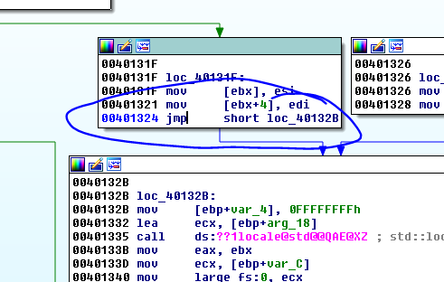
JMP SHORT es un salto corto que está compuesto por dos bytes y como solamente la posibilidad de saltar hacia adelante y hacia atrás está dada por el valor del segundo byte ya que el primero será el OPCODE del salto, no podremos saltar muy lejos.
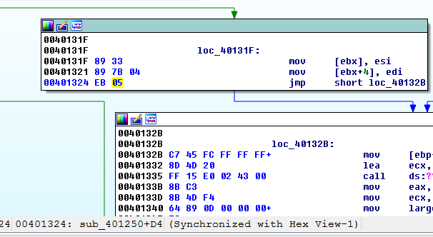
Si ponemos en las opciones que se vean los bytes que componen las instrucciones vemos el opcode EB que corresponde al JMP y que saltara 5 lugares hacia adelante desde donde termina la instrucción, o sea que la dirección de destino hacia adelante se podría calcular como.
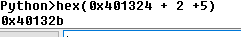
La dirección de inicio de la instrucción más 2 que es la cantidad de bytes que ocupa la instrucción y luego le sumo el 5 que me muestra el segundo byte.
Obviamente saltar para adelante y para atrás con un solo byte no nos da mucho alcance, el máximo salto positivo hacia adelante será 0x7f, veremos un ejemplo.
Como vamos a hacer algunos cambios que romperán la función conviene hacer un snapshot de la database la cual nos permitirá retornar al estado anterior a la rotura, siempre que tengamos dudas de lo que vamos a realizar si puede romper alguna función y no sabemos restaurarlo conviene hacer un snapshot.
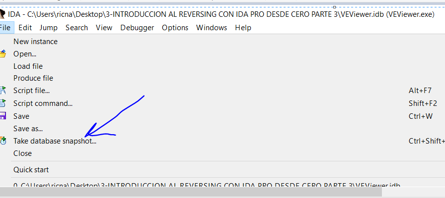
Nos pedirá un nombre y listo.
EN VIEW-DATABASE SNAPSHOT MANAGER
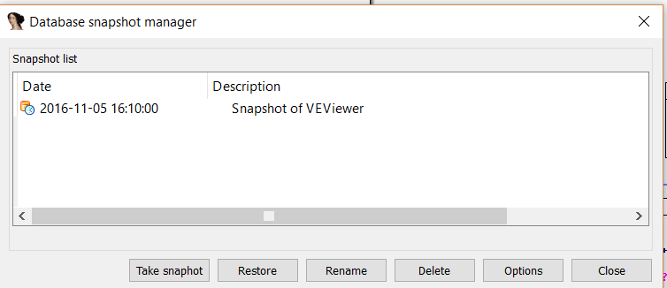
Nos permitirá ver la lista de todos los snapshot y la fecha en que fueron hechos y con el botón RESTORE podremos volver al estado que queramos de los que habíamos guardado.
Veamos qué pasa si cambio el 05 por 7f.
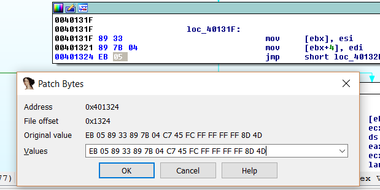
Usando el PATCH BYTE del IDA cambio el 05 por 7f.
El salto es un poco más largo y se va fuera de la función si apretó la barra espaciadora para salir del modo gráfico.
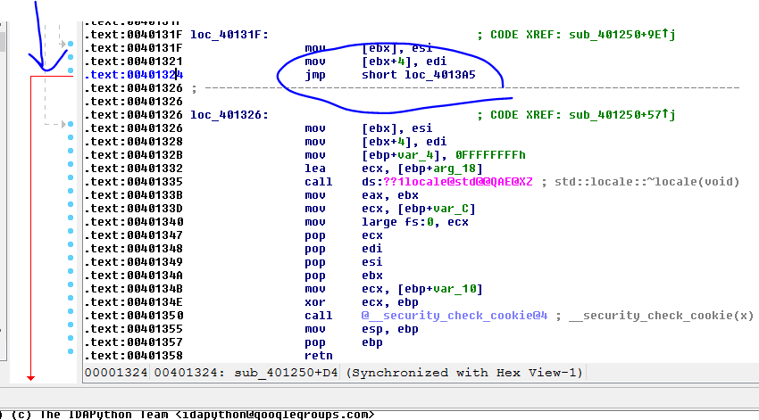
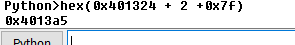
Vemos que la cuenta nos da bien y salta a 0x4013a5 hacia adelante, veamos qué pasa si cambiamos el 0x7f por 0x80.
Volvemos al modo gráfico con la barra y cambiamos por 0x80.
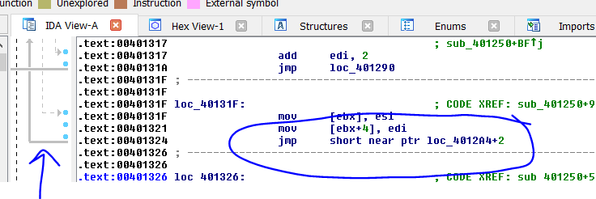
Vemos que ahora hacemos el máximo salto hacia arriba, aquí al pasar de 0x7f que es el máximo salto hacia adelante, pasamos a 0x80 que es el máximo salto hacia atrás.
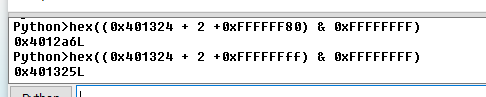
En este caso como vamos hacia atrás para que nos dé bien la cuenta en la formula y solo para propósitos matemáticos ya que Python no sabe de esto de que los saltos pueden ir hacia adelante o hacia atrás a partir de un valor, debemos pasar el -0x80 a su valor hexadecimal en dword que es 0xFFFFFF80 y luego como vimos al hacer el AND 0xFFFFFFFF del resultado limpiamos todos los bits mayores que los necesarios para un numero de 32 bits y listo nos da la misma dirección 0x4012a6.
Si uso como segundo byte 0xFF sería un salto mínimo, que pasado a dword hexa es -1 o sea le sumo 0xFFFFFFFF para que me de la cuenta, recordemos que siempre le sumamos los dos del largo de la instrucción, así que no saltara para atrás ya que ese dos que le sumamos hace que se tome como inicio del cálculo hacia atrás la dirección final donde termina la instrucción y volver uno hacia atrás desde allí nos deja en 0x401325.
Si seguimos hacia atrás una posición más o sea el segundo byte seria FE esto es saltar -2 para atrás desde donde termina la instrucción, eso sería en la formula sumarle 0xFFFFFFFE.
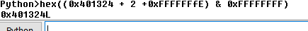
Esto salta al mismo inicio de la instrucción es lo que se conoce como LOOP INFINITO pues siempre vuelve a repetirse y no se puede salir de él.
Y así sucesivamente saltar -3 desde donde termina la instrucción para atrás será FD o sea que saltara a 0x401323.
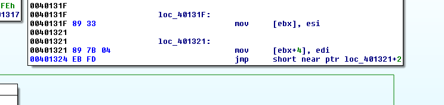
Obviamente con los saltos cortos no podemos saltar a cualquier dirección pues estamos limitados a pocos bytes alrededor de donde nos encontramos para ello usamos el salto largo.
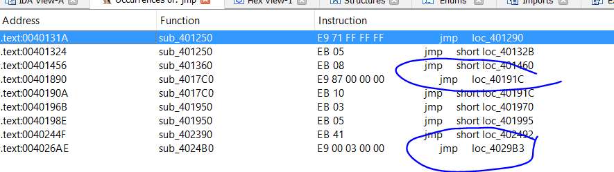
Ahí vemos un par de saltos largos recordemos que loc_ nos dice que esa instrucción es una instrucción cualquiera.
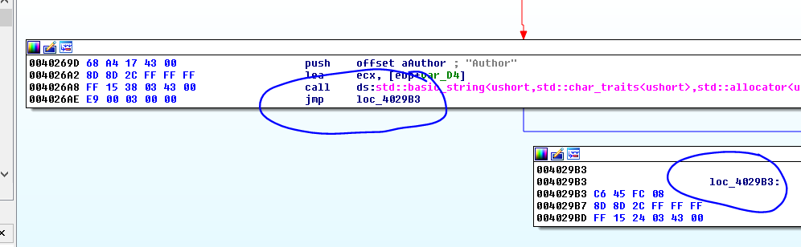
Allí vemos el salto largo, la distancia entre 0x4026ae y 0x4029b3 es mucho más grande de lo que podemos alcanzar con un salto corto.
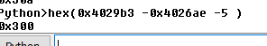
Allí vemos que la distancia se calcula con la formula dirección final menos dirección inicial – 5 que es el largo de la instrucción eso me da 0x300 que es el dword al lado del opcode del salto largo 0xe9.
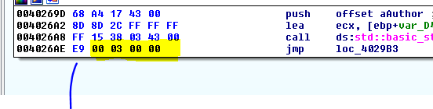
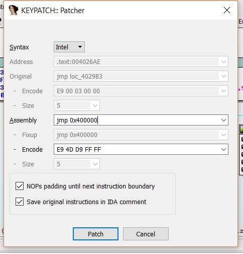
Si con el KEYPATCH cambio la dirección de destino del salto a una dirección hacia atrás por ejemplo 0x400000.
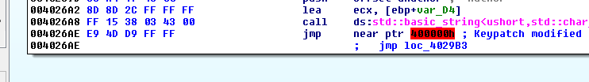
Aunque me marca en rojo porque no es una dirección valida en este momento, veré si puedo armar en PYTHON una fórmula para ir hacia atrás.
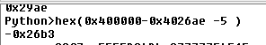
Eso me da -0x26b3 de distancia usando la misma fórmula anterior.
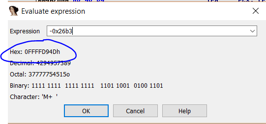
Pasados a bytes hexa es FFFFD94D que son los bytes al lado del opcode 0xe9 obviamente al revés.
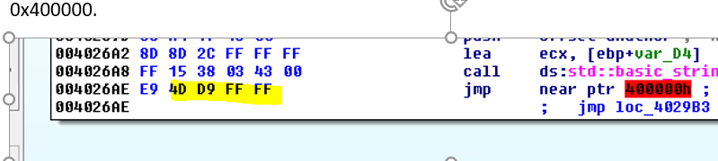
SALTOS CONDICIONALES
Normalmente los programas tienen que tomar decisiones y según la comparación de ciertos valores desviar la ejecución del programa a un punto o a otro.
Tomemos por ejemplo CMP A,B
Puedo necesitar que el programa compare A y B según la relación entre ellos el programa haga algo y si no haga otra cosa diferente.
Así que normalmente después de la comparación que cambia los famosos FLAGS, según el estado de ellos, la instrucción de salto condicional decidirá qué hacer.
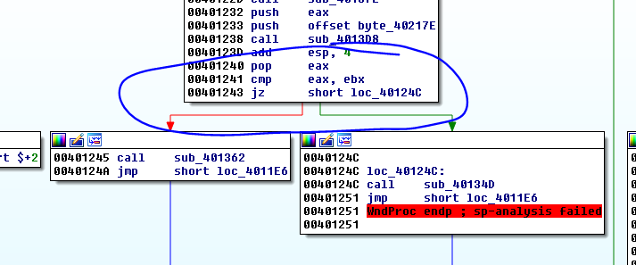
Allí vemos un ejemplo de salto condicional JZ el mismo salta si el flag Z o cero está activado. Eso ocurre cuando en la CMP anterior EAX y EBX son iguales ya que internamente CMP es similar a SUB pero sin guardar el resultado.
CMP resta ambos registros y si son iguales dará cero lo que activara el FLAG Z o cero que es lo que mira el salto JZ para saltar, si el FLAG Z está activado va por el camino de la flecha verde y si no ira por la flecha roja si son distintos.
Ya veremos al debuggear ejemplos de cómo se encienden los flags al realizar diferentes operaciones, por ahora lo importante es que si hay una comparación pueden a continuación existir estos diferentes saltos.
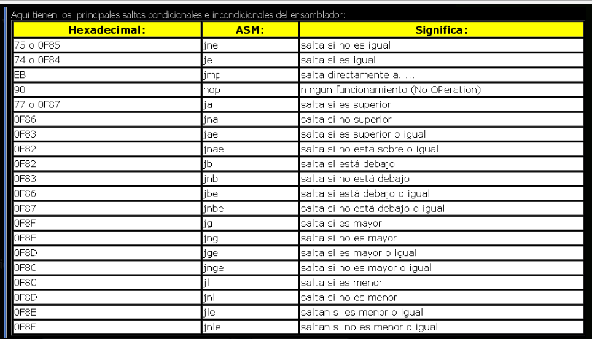
Bueno salvo el JMP y el NOP que están colados en la tabla, el resto son saltos condicionales que evalúan diferentes estados de una comparación, si el primero es mayor, o si es mayor o igual, si es menor etc, hay diversas posibilidades, las cuales veremos más adelante con mayor profundidad al ver el DEBUGGER.
CALL Y RET
Otras instrucciones que mencionaremos son el CALL para llamar a una función y el RET para volver de la misma a la instrucción siguiente del punto de llamada.
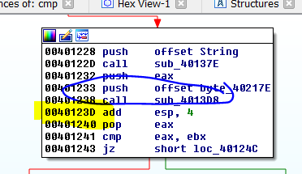
Allí vemos un ejemplo de un CALL, el mismo saltara a 0x4013d8 a ejecutar dicha función (vemos el sub_ delante de la dirección 0x4013D8 que nos indica esto).
El CALL guarda en el TOP del stack el valor donde retornara o return address en este caso 0x40123d, dentro de la función a la cual puedo entrar haciendo ENTER en el CALL.
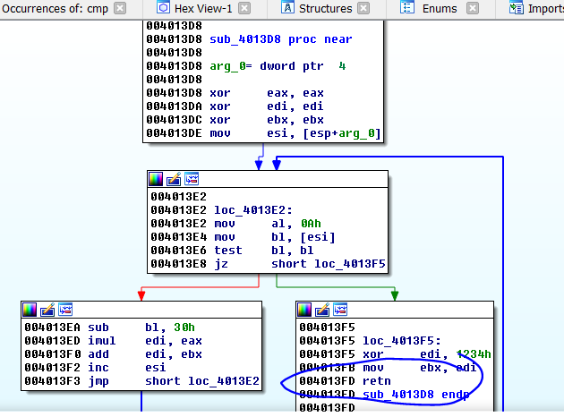
Al terminar la función la misma llegara a un RET que toma la dirección de retorno guardada en el stack 0x40123d y salta allí, continuando la ejecución luego del CALL.
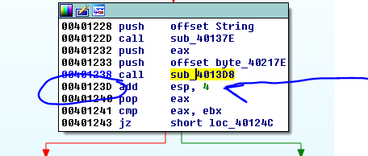
Bueno con esto terminamos un paneo rápido de las instrucciones principales, algunas las detallaremos más adelante, cuando haya que tener más precisión y detalle.
Hasta la parte 8
Ricardo Narvaja